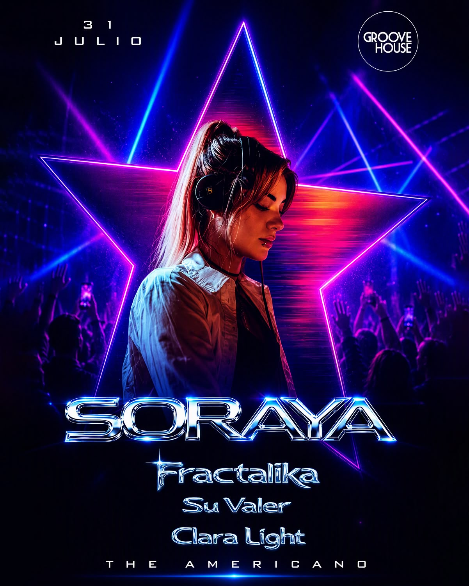

SORAYA
fecha: 31/07/26 hora: --pm
lugar: The Americano,
Av. Alameda Pachacuteq B-4, Cusco


⚡ GROOVE HOUSE × THE AMERICANO
WELCOME TO SEASON II
Una nueva temporada comienza con una edición especial donde el talento femenino toma el control de la cabina y transforma la pista en una experiencia de groove, energía y buena música.
🔥 Desde Lima llega SORAYA, una de las DJs con mayor proyección del país. Finalista de Elrow Up & Coming Talent, residente de Superclub, protagonista de festivales y escenarios junto a referentes internacionales como Paco Osuna, Hugel, Nick Curly, Waff, Technasia y muchos más. Una artista que transforma cada set en un viaje de energía, groove y conexión con la pista.
Junto a ella, el talento local demuestra por qué Cusco también se mueve fuerte:
⚡ Fractalika
⚡ Clara Light
⚡ Su Valer
She moves the decks. She shifts the energy. She takes control. 🔥⚙️
📍 Venue: The Americano
🗓️ Fecha: Viernes 31 de Julio
🎟️ FREE INGRESO / QR PASSPORT:
El ingreso es GRATUITO con QR. Registra tu acceso en el enlace de la bio antes de que se agoten los cupos.
LINE-UP:
Soraya
Fractalika
Su Valer
Clara Light